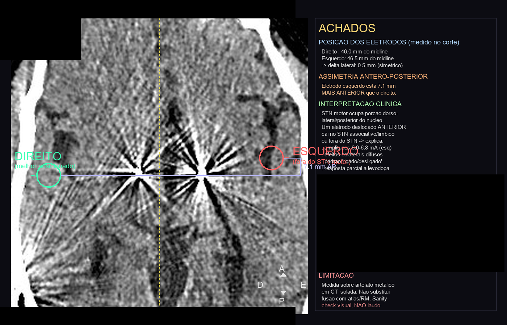

A história real (anonimizada) que deu origem ao projeto. Sobre o meu pai.
Sete vírgula um milímetros. Esse é o quanto o eletrodo no cérebro do meu pai ficou fora do alvo — desde a cirurgia, anos atrás.
Meu pai tem Parkinson. Anos atrás, fez uma cirurgia de estimulação cerebral profunda (DBS): basicamente um marca-passo instalado no cérebro. Por seis anos, ninguém notou que o eletrodo esquerdo tinha sido posicionado fora do ponto certo.
Eu trabalho com tecnologia e estudo IA aplicada desde 2022 — sistemas multi-agente, RAG, memória semântica em produção. Não sou médico. Não tenho doutorado. Nada disso me preparou para o que vou contar.
Praia, família reunida. Meu pai travou. Tremor, rigidez total, olhando pra gente sem responder. Eu tinha o controle remoto do estimulador na mão. Desliguei. Esperei. Religuei. Ele voltou a se mexer.
Levei ao médico. A resposta foi: "isso é progressão da doença. Você tem que aceitar a condição do seu pai." Aceitar.
Comecei a estudar Parkinson e neuroestimuladores a fundo. E fiz duas coisas. Primeiro, construí um assistente de WhatsApp que conversa com meus pais todo dia e registra remédio, tremor, marcha e o programa ativo do estimulador — em dois meses, uma base de dados que nenhum médico teria como acumular sozinho, porque a consulta vê um instante e o dia a dia vê o padrão. Segundo, organizei mais de 50 exames, de cerca de uma década, cada PDF por OCR, cada laudo virando texto pesquisável.
Aí montei um time de IA: cinco agentes especialistas — neurologia, neurocirurgia de DBS, farmacologia, evidência clínica e um auditor anti-viés (para brigar com as conclusões dos outros). Dois dias de computador rodando.
A amperagem estava em 6,0 mA. Para um contato direcional, o esperado é abaixo de 4. Estava cronicamente acima, havia meses. E o eletrodo esquerdo estava 7,1 mm fora do alvo — assim desde a cirurgia. Seis anos de estimulação com o eletrodo fora do lugar, vazando estímulo para estruturas vizinhas.

Tudo que parecia progressão da doença era, em boa parte, estimulação desalinhada.
Eu sei que a IA alucina. Uma hipótese que explica bem demais é bandeira amarela. Então não acreditei — fui verificar. Marquei consulta com um neurologista de um centro de referência terciário. Levei meu pai, a reconstrução tridimensional, tudo. Ele fez a própria análise, com o time dele. Confirmou.
A partir daí, refinamos o plano juntos: reprogramação guiada por imagem, redução de amperagem semana a semana. Meu pai está em recuperação — voltando a se mexer com mais leveza, a participar das conversas. Pedaço por pedaço.
Nenhum médico errou de propósito. O sistema dá vinte minutos de consulta e anos entre revisões. Ninguém tinha tempo de cruzar uma década de exames para encontrar a pergunta certa. Eu tive. IA aplicada ao seu negócio é uma fração do que ela consegue quando aplicada a uma vida que você ama. Mesmo conjunto de ferramentas. Resultado incomparável.
A IA não diagnosticou. Não prescreveu. Não reprogramou. Os médicos fizeram. Eu só reduzi a distância entre os dados e a decisão.
Porque essa distância existe para muita gente. Se você cuida de um familiar com uma doença complexa, talvez parte disto sirva para você também. O Neurosint é esse sistema, transformado em template — sem nenhum dado do meu pai e sem nenhuma credencial — sob licença AGPL-3.0. Um copiloto para a família e o médico: organiza, cruza e prepara; quem decide é sempre o profissional.